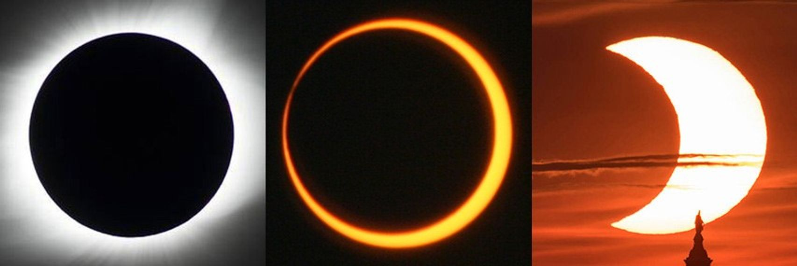
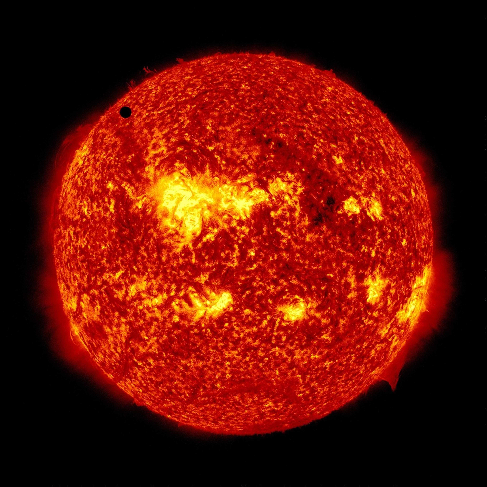
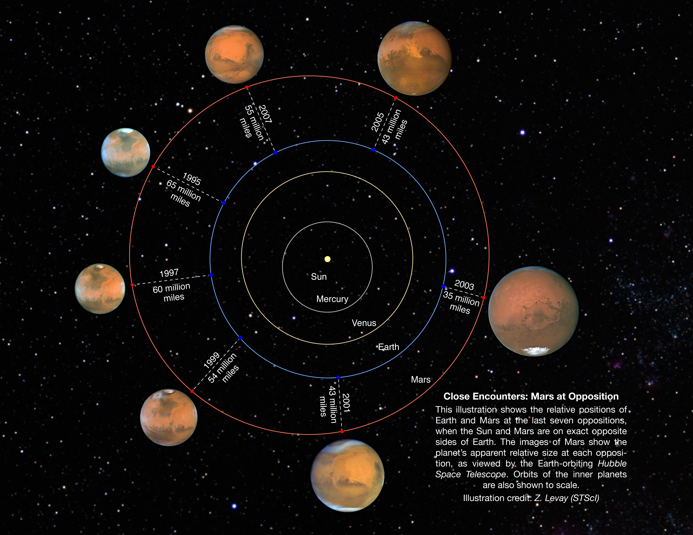

日食、月食、水星凌日、金星相位、火星冲日，看起来是需要分别解释的五种天象。有的让天空突然变暗，有的只在太阳圆面上留下一个小黑点，有的改变行星的亮面形状，还有的使一颗行星在夜空里变得格外适合观察。但它们的共同起点很朴素：太阳提供照明，天体在不同轨道上运动，观察者站在其中一个位置。只要同时保留“光从哪里来”“被谁挡住”“从哪里看”三个问题，许多天象就会成为同一幅空间图的不同片段。
这幅图不能只画几个点。天体有大小，太阳不是一个无限遥远的点光源，轨道也不完全共面。月球在地球与太阳之间，并不自动意味着日食；地球在太阳与火星之间，也不意味着会投下一条遮住火星的巨大阴影。所谓“排成一线”，常常只是日常语言对方向接近的概括。要理解为什么某些排列常见，而真正的遮掩罕见，就需要把天体的圆面、影子和轨道倾斜一起放回来。
太阳直径约为月球的四百倍，却又比月球远约四百倍，所以两者在地球天空中的视直径都在半度左右。对于角度较小的圆面，角直径以弧度表示时近似满足 ，其中 是实际直径， 是观察距离。这个关系说明，一个很大的远处天体，可以与一个小得多但更近的天体看起来差不多大。日全食的惊人景象，正建立在这种视大小的接近上，而不是太阳与月球实际大小相近。[2][56]
这两种视大小又不是永远相等。月球绕地球的轨道是椭圆，近地点与远地点的距离不同；地球与太阳的距离也随一年改变。月球较近时，圆面看起来略大；较远时，圆面略小。我们在照片里有时觉得月球大小差别很明显，还必须排除焦距、裁切和显示尺寸变化：只有用一致尺度比较，才能讨论真实视直径。即使这种差别对随手观看的肉眼不总显著，它也足以决定一场居中的日食究竟是全食还是环食。[56][60]
因此，日食的壮观带着某种几何上的偶然性。地球的观察位置、月球的尺寸与轨道距离共同创造了这个效果。站在别的行星或卫星上，遮挡太阳的天体可能太小，只能留下一个点；也可能大得多，把太阳连同周围很大一片天空一起挡住。同样叫遮掩，视觉经验取决于观察者所在世界，而不是宇宙统一安排的一套舞台效果。
先把太阳、月球与地球按这个顺序排列。太阳的光被月球挡住，在月球背向太阳的一侧形成影区。由于太阳是具有一定圆面大小的光源，不同位置被遮住的太阳比例不同。在本影内，太阳圆面被完全遮挡；在半影内，只被遮住一部分。地面观察者进入月球本影，才能看见日全食；只位于半影中，则看见日偏食。这里被遮住的是观察者通向太阳的视线，不是太阳本身忽然停止发光。[60]

图：左至右为日全食、日环食、日偏食，三幅照片的曝光及事件不同。环食留下的是太阳光球的一圈，不应把全食期间外部日冕与它混为一谈。此图不作为直接裸眼观察太阳的方法。 署名：左 NASA/MSFC/Joseph Matus；中 NASA/Bill Dunford；右 NASA/Bill Ingalls。出处与使用条件见素材记录。
本影向后收窄，是因为太阳比月球大。从月球后方不同距离看去，月球的视圆面会逐渐变小；到了本影锥顶点之后，即使两个圆面中心对得很齐，月球也不足以覆盖整个太阳，外侧会留下一圈阳光。这个区域称为伪本影或反本影，对应日环食。环食不是“差一点就全食，所以可以不用防护”的昏暗版本；太阳光球仍有明亮部分直接可见，观测安全要求始终不能松动。[60][71]
有时地球表面的曲率与影锥末端的位置关系，使同一次中央日食在路径的不同部分呈现全食或环食，称为全环食，也常称混合食。这个名字不意味着同一个观察者可以任意在全食与环食之间切换，而是同一条事件路径上的几何条件不同。至于为什么日全食总要去某条很窄的带内“追”，答案也是影子尺度：月球本影与地表相交的区域相对有限，随着天体运动和地球自转，它扫过地面形成全食带，而不是让整颗地球同时进入黑夜。[60]
从地面看一次全食，我们看到的是太阳逐渐被覆盖，短暂的全食阶段使平时被耀眼光球淹没的日冕更容易显现；从太空回看地球，则可能看见一个影子正在地表移动。同一个现象换了观察位置，就从“天上的太阳缺了一块”变成“地球上有一片区域收不到直射阳光”。这种切换有助于避免把日食仅仅理解成太阳圆盘上的图案变化。[60]
月食的排列顺序则是太阳、地球、月球。月球运行进入地球的影区，受到的直接太阳照明减少。月球整体进入地球本影，才是月全食；只有一部分进入本影，则是月偏食；如果只经过半影，通常只是月面亮度出现较轻微的变化。三个名字的区别不在于地球观测者站在什么影子里，而在于月球本身进入了地球影区的哪一部分。[59]
这与日食的可见范围形成鲜明对比。日全食要求观察者站在月球本影扫过的狭窄地带；月全食时，月球受到照明改变是远处真实发生的过程，地球上只要当时月球位于地平线上方、天空条件允许的人，都有机会观看。不同地点看到的月球高度与背景不同，但并不是每个城市各自拥有一套互不相干的食甚时刻。一次月食因此往往能够被非常广大的夜半球区域共同观看，而日全食追逐的是一条具体路径。[59]
月球距离处的地球本影也比月球大。用平均日地、地月距离作简单影锥几何估算，该处本影直径约九千二百千米，是月球直径的两倍多。真实数值会随距离及所采用的边界定义变化，但这个量级已经解释了为什么月球能整个走进地影，并在里面停留一段时间。日食与月食虽然都涉及三个天体近似排齐，影区大小与观察方式却很不一样。[8][56]
如果此时站在月球受到月全食影响的地区，会看到什么？地球挡在太阳前方，那里的观察者经历的相当于一次被地球造成的日食。地球视圆面比太阳大得多，其边缘的大气又可能显现一圈带颜色的光。对于地球人是“月亮变暗”，对于月面观察者却是“太阳被地球挡住”。天象名称以观察者为中心，物理过程则可以用同一套光路连续描述。
若把地球想成没有大气的完全不透明圆球，月球进入本影后应该失去绝大部分直接太阳照明。但真实地球有大气，部分阳光沿近乎擦过地球边缘的路径穿过大气，受到折射后能够进入几何本影区域。光穿过很长的大气路径时，较短波长的光更容易被散射出原方向，留下来的光常偏红，于是月全食中的月球可能呈现暗红、铜红或其他色调。[59]
这与地球上日出日落时阳光发红的原理有联系，却不需要把月球说成自己变成了一颗红色光源。它仍在反射到达月面的光，只不过光先穿过了地球大气。不同月食的颜色与亮度并不完全一样，大气中的云、气溶胶和火山活动相关物质等，都可能改变能够穿过边缘大气的光。地球大气的状态，以一种间接的方式被投影到了月面。[59]
所以，“血月”不是月球进入某种新天体类别，更不是它出现了高温熔融。这个流行名称描述一种外观，真正的解释仍然是遮挡、折射、散射与反射。看到一个有吸引力的天象词语时，值得继续问它对应什么可测量的光路；否则词语会越积越多，天空仍然只是难以联系的奇观合集。
普通月相循环每个月都会出现朔与望，却不会每个月都有日食与月食，因为月球绕地球的轨道面与地球绕太阳的轨道面并不重合。两者约有 5.1° 的倾角。站在地球上看，月球有时从太阳方向的上方经过，有时从下方经过；满月附近也可能从地球本影的上方或下方绕过去。拿只有一个平面的日地月模型演示，若忘记补上这点，便很容易错误地得到“每次新月都有日食”。[56][61]
把 5.1° 与太阳约半度的视直径比较，就会发现这个倾斜并不小：它大约是太阳圆面宽度的十倍。尽管轨道倾斜在太阳系总图上看起来只是轻微歪斜，它在精确对准太阳或地影的问题上却足以决定有无天象。这里我们需要的是角尺度，而不是仅凭一张示意图里两条线靠得很近，就判断它们“差不多共面”。
月球轨道与黄道面的交线，对应两个交点。朔或望发生在交点附近时，月球才有可能足够接近太阳—地球的方向线，从而发生食。随着太阳方向与这条交点线的关系改变，会出现一段相对容易发生食的时期，称为食季。两次相邻食季的中心大约相隔 173 日，不是简单固定在公历上每隔六个月的同一天；月球轨道交点本身也会缓慢移动。[61]
这还引出为什么日月食可以在很长时间后以近似方式重复。要重现一场食，仅仅恢复相同月相还不够，月球还需要接近相同交点，并尽量恢复相似的远近位置。月相循环涉及朔望月；相对交点的循环涉及交点月；相对近地点的循环涉及近点月。它们各自的长度略有差别，却存在一种接近配合：223 个朔望月，近似等于 242 个交点月，也近似等于 239 个近点月。[62]
这一组合产生约十八年十一天又八小时的沙罗周期。它的魅力不是让人背下三个整数，而是让我们看见“重复”需要同时满足几套运动条件。多出的约八小时意味着地球又自转了约三分之一圈，所以相隔一个沙罗周期的日食，不会简单地在原来的城市、原来的钟点复制一次；几何关系也只是近似重现，食的具体性质会继续演变。规律并不等于完全相同，这正是预测真实天空与播放循环动画的区别。[62]
如果遮挡太阳的是水星或金星，从地球看，它们的视圆面远小于太阳，只能成为在太阳表面缓慢移动的小黑点，这种现象称为凌日。月球也从太阳前方经过，但由于视大小接近太阳，我们通常把它称为日食。两类事件并非使用不同的宇宙规则，而是在天体大小、距离及命名传统上存在差别。[63]

图：2012 年金星凌日，金星是太阳圆面上方偏右的小黑圆。太阳由 AIA 304 Å（30.4 nm）通道记录并赋红色，不是肉眼可见红太阳；凌日是一个近处天体遮住部分远处光源的几何过程。 署名：NASA/SDO, AIA。出处与使用条件见素材记录。
从地球出发看太阳系行星，水星和金星的轨道位于地球以内，所以它们可能运行到地球与太阳之间；火星等外侧行星没有这种通常的内侧排列。这就是为什么可从地球观测的行星凌日涉及水星和金星，而不是只有水星。换到另一颗行星上，名单便可能变化，因而“哪些行星能凌日”必须带着观察位置说。这与月球上看到的地球日食，是同一种视角意识。[63][64]
但每次水星或金星来到地球与太阳之间，也不都会凌日。它们的轨道同样相对黄道倾斜，需要在下合附近同时接近相应轨道交点，才能真正经过太阳圆面。水星凌日较常见，金星凌日则非常稀少，并常以间隔八年的一对出现，之后又等待很长时间。2004 年和 2012 年的金星凌日便是一对。那八年的间隔来自地球与金星轨道周期之间的近似重复关系，而不是金星只在某两个年份才到地球轨道以内。[63][64]
这一点也揭示了“下合”与“凌日”的差别。下合描述内行星运行到相对于地球和太阳的近侧方向关系；凌日额外要求视线真正穿过太阳圆面。前者是一种常见的相对轨道位置，后者是条件更苛刻的投影重合。把“在两者之间”只理解成二维纸面上夹在中间，会错失第三维的倾角，也会把罕见现象误说成经常发生。
金星有时在日落后出现，有时在日出前出现，因此获得了昏星与晨星等称呼，但它并不是在两个身份之间变成了不同的天体。作为内行星，它在天空中始终不会离太阳特别远。当金星位于太阳以东的天空方向时，往往在太阳落下后仍位于地平线上方；当它位于太阳以西时，往往先于太阳升起。这里的东西是天球方向关系，不是行星在某张随意旋转的轨道图上位于左边还是右边。[65]
天体与太阳在天空中的角距离称为距角。用圆形、共面轨道作几何近似，内行星的最大距角满足 。将金星轨道尺度约 0.72 AU 代入，得到约 46°，与实际最大距角在四十多度的范围相符。这解释了为什么金星虽有时很亮，却不会像冲日前后的火星那样，在午夜高悬于与太阳相对的天空。[7][65]
金星与月球一样，也有被太阳照亮的半球，所以会呈现相位变化。接近下合时，它离地球相对近，视圆面较大，但朝向地球的主要是夜面，只留下细弯的受光部分；位于太阳另一侧、接近上合时，它相对更远，视圆面较小，却能展示较大的受光比例。于是观察金星不能只盯住“越来越圆”或“越来越亮”，还要同时留意视直径的变化。形状变丰满时，天体在视野里反而可能缩小。[66]
金星亮度因此不是受光面积比例的简单复读。它与太阳的距离影响照明，与地球的距离影响到达我们这里的通量，云层反射性质及相位又影响反射分布。接近极细的新相时，受光面太少；接近满相时，距离较远又接近太阳方向；最明亮的状态可以出现在较宽的弯月阶段，而不是圆得最完整的时候。一个在望远镜里看上去并不圆的金星，仍可能是肉眼夜空中异常醒目的亮点。[27][67]
关于“地球上看不到金星满相”，最稳妥的理解要把几何极限与通常观测分开。在理想几何中，严格满相要求太阳与地球从金星看处于完全相同方向；金星位于太阳后方并与之精确共线时，又会被太阳遮挡。真实上合附近通常不是精确共线，相位可非常接近满，却也极靠近太阳方向，常规地面观测困难。我们能够观测接近满相的盈凸形态，不能把“严格满相的特殊极限”扩展成“金星绝不会显示接近完整的受光圆面”。[65][66]
伽利略对金星相位的观测之所以重要，正因为它不只是发现了一个像月亮的亮点。金星展示的相位范围，与其绕太阳运动的几何关系相符，并对经典托勒密体系中特定的金星布局提出了挑战。但仅凭这一项观测，也不能声称已经独立排除了所有地心形式：例如让金星绕太阳、太阳再绕地球的体系，也可以重现相关相位。好的历史解释应保留证据真正排除了什么，而不是把后来被接受的整个宇宙图景都塞进一幅早期望远镜图中。[66][73]
外行星可以出现在天空中与太阳大致相对的方向，称为冲。火星冲日时，地球位于太阳与火星之间的轨道位置附近，从地球看太阳与火星的方向接近相差 180°。太阳落下，火星大致升起；接近地方午夜时，它经过较高的天空位置；太阳升起前后，它又趋向落下。这样的几何关系有利于持续夜间观测，而且火星通常与地球相对接近，视直径较大。名字中的“冲”说的是方向相对，不是火星正在向太阳猛冲。[68]

图：1995—2007 年七次冲日的地火位置与火星视大小比较。轨道平面位置用于解释距离差别，外圈火星照片展示不同视直径；这不是在太阳系外拍摄的单幅现场照。 署名：NASA, ESA and Z. Levay (STScI)。出处与使用条件见素材记录。
地球绕太阳一圈约需一年，火星约需 1.88 年。地球在内侧轨道运动较快，追上并再次与火星形成相同日地火方向关系，需要超过一年的时间。用平均圆周运动近似，会合周期 满足
代入约 365.256 日与 686.98 日，得到约 780 日，也就是约二十六个月。于是“火星冲日大约两年一次”可以作为粗略说法，但不应进一步理解成每隔两个公历年总在同一天发生。这一公式与朔望月的关系式有相同结构：都是比较两个方向变化速率，而不是孤立地看某颗天体绕行一圈需要多久。[7][68]
冲日时刻与地火最近距离时刻，也并不必然重合。只有在足够理想化的圆形共面轨道图里，几种条件才容易压成一个瞬间；真实轨道偏心率使地球和火星各自的日心距离持续变化，最近距离可能出现在冲日前后若干天。不同次冲日的地火距离也很不一样，火星与太阳较近时发生的有利冲日，可能让火星看起来显著大于另一次冲日。NASA 对不同年份的火星影像做统一角尺度比较，直观展示的正是这一点。[69]
然而，“显著变大”仍然有明确尺度。火星在特别有利的接近中，视直径也只是约二十多角秒，而月球约半度，也就是约 1800 角秒。两者相差几十倍的直径，不可能在正常肉眼天空里成为两轮同样大的圆月。把望远镜放大的火星照片与未放大的月亮并排，确实能人为制造相似大小，但那比较的是图片版式，不是天象。日月食教给我们的角直径意识，在这里再次成为识别误导的工具。[70][56]
冲日前后的火星还会出现另一种著名现象：相对于背景恒星，它的视运动会暂时改变方向，形成逆行段，有时在连续位置图上呈现回环。这并不是火星在日心轨道上踩下刹车再倒着开，也与第二篇讨论的金星逆行自转不是一回事。这里改变的是从一个同样正在运动的地球看过去，火星投影在遥远背景上的方向。
可以从两个运动位置的差来理解。地球在内侧较快轨道上追越火星时，地球到火星的连线方向会以不同于火星自身日心运动的方式变化。因为观察者也在移动，目标在背景上的表观位移不必始终与目标真实运动同向。这个现象类似从一辆正在超车的车上看另一辆车，后者可能在视野里向后退，却仍在道路上向前行驶；只是行星轨道是曲线，我们比较的是远方星空方向，而不是道路边的近处景物。[23][68]
因此，天文学里相同词语可能指向不同对象的运动。“逆行自转”比较自转与公转角动量方向；“行星视逆行”描述天体相对恒星背景的暂时投影运动。前者是天体旋转状态，后者与观察者位置强烈相关。如果把两者合并为“这颗行星反着走”，我们看似记住了一个词，却失去了对现象的判断能力。
凌日的几何还把太阳系与更遥远的行星研究连接起来。面对其他恒星，我们通常不能像看水星凌日那样直接分辨恒星圆面上的行星黑点，但可以测量整颗恒星的总亮度。行星从恒星前方经过，挡住一部分光，总亮度便短暂下降；如果这种下降以稳定周期重复，就可能成为行星存在的线索。这叫凌星法，概念上的原型与太阳系内的凌日相通。[72]
在恒星圆面亮度均匀、行星完全位于其投影范围内、也没有其他光源混入等简化条件下，遮挡造成的相对亮度下降近似等于面积比：
这里 是行星半径， 是恒星半径， 是未被遮挡时测得的恒星通量。这个关系为什么是平方而不是立方？因为挡光比较的是视线方向上的截面积，而不是行星体积。同样大小的行星，遮挡更小的恒星时，造成的相对变暗会更深；因此测得凌星深度，并不能在不知道恒星大小的情况下直接得到行星的绝对半径。[74]
真实凌星曲线还受到恒星临边昏暗、轨道倾角、擦边经过，以及其他恒星光混入等因素影响，恒星自身活动或食双星也可能造成需要甄别的信号。因而一次亮度下降不是自动成立的行星证明。这里不必展开完整的系外行星探测课程，但这一小段延伸很有价值：我们刚刚用来解释一场肉眼奇观的光路几何，也可以成为测量遥远世界的工具。[72][74]
关于太阳的所有天象，都需要把观看安全单独放在几何理解之外。普通太阳镜、烟熏玻璃、未经验证的深色材料，不能代替合格的专用太阳观测防护。即使戴着日食眼镜，也不能再透过没有专用安全滤光系统的望远镜、双筒镜或相机光学取景器看太阳；光学系统集中太阳光之后，危险并不会被眼前的一小片材料自动消除。光学设备的太阳滤光系统应由受训人员检查，并按设备要求正确安装，通常需要在入光前端阻挡危险辐射。[71]
日偏食、日环食以及凌日全过程，都不能因为“太阳已经缺了一块”或“被行星挡住一点”而降低防护。确实处于日全食带、且太阳光球已经完全被遮蔽的短暂全食阶段，具有不同的裸眼观看条件；但这个例外要求准确判断地点与接触时刻，不应被新手拿来推测“现在大概已经够黑”。社团例会上分享这些内容，使用权威影像、模拟或由有经验成员组织的安全观测，比让没有检查过设备的人自己寻找太阳更合适。[71]
回到最初那些名字，它们已经不再需要五套独立故事。月相与金星相位是看受光部分的角度变化；日月食和凌日是特定条件下的光路遮挡；冲日和视逆行则把地球自身的运动纳入我们所见的天空。轨道告诉我们天体在哪里，光照告诉我们哪一面明亮，视角决定最终看见什么。真正把这三者放在一起，下一次听到一个陌生天象名称时，我们就有了一种能够继续追问的方式，而不必只等待另一个孤立答案。
相关图版。 NASA 各类食的照片与说明用于比较不同光路的结果；1995—2007 年火星冲日的轨道位置及视大小比较有助于区分冲日与最近距离；伽利略的金星相位记录适合讨论观测如何约束模型。太阳观测以 NASA 安全指引和 AAS 指引为准。资料性质及署名见素材索引。